Citrix Provisioning - Update vDisk
Navigation
This article applies to all 7.x versions of Citrix Provisioning, including 2411, 2402 LTSR, and 2203 LTSR.
- Change Log
- Updater Device
- Update a vDisk - Versioning Method
- Merge Versions
- Expand vDisk VHD
- Reverse Image - BCDEDIT Method
- Automatic Scheduled vDisk Update - SCCM
:idea: = Recently Updated
Change Log
- 2023 Sept 27 - Reverse Image - added link to Citrix Image Portability Service can take a VHD from a Citrix Provisioning (PVS) store and recreate the original vSphere image.
- 2022 Oct 12 - added link to CTA Nishith Gupta VMware Tools In PVS Image
- 2019 Jun 8 - Update a vDisk - added link to Citrix Blog Post The vDisk Replicator Utility is finally finished!
- 2018 Sep 3 - replaced Provisioning Services with Citrix Provisioning
- 2018 June 9 - Update a vDisk - added link to Citrix Blog Post vDisk Replicator Utility
Updater Device
- Create a new Updater Target Device that is only used when you need to update a vDisk. You can create the Updater device manually or you can use the Citrix Virtual Desktops Setup Wizard.
- Put the Updater device in a new Device Collection. This is to avoid assigning the device to a Catalog in Studio. Users must not connect to an Updater device while it is powered on.
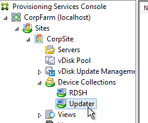
- Set the Updater device to boot from the Maintenance Type. This is used by the Versioning method of updating a vDisk.
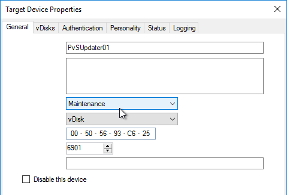
- When adding the Updater device to Active Directory, be mindful of group policies. Sometimes it is helpful to apply the group policies to the Updater device so they are stored in the vDisk you are updating.
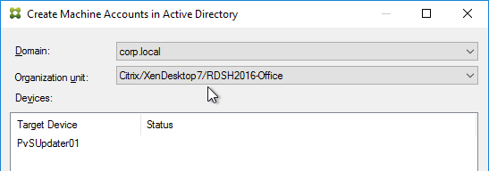
- An Updater device can only boot from one vDisk at a time but it can boot from any vDisk. If you need to do updates to multiple vDisks simultaneously, create more Updater devices.
- If you are using Enterprise Software Deployment tools (e.g., System Center Configuration Manager) to maintain a vDisk, keep the Updater device constantly booted to a Maintenance version so the ESD tool can push updates to it. This basically requires a separate Updater device for each vDisk.
Update a vDisk – Versioning Method
- In the Citrix Provisioning Console, right-click a Standard Mode vDisk, and click Versions.
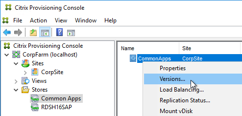
- In the vDisk Versions window, click New.
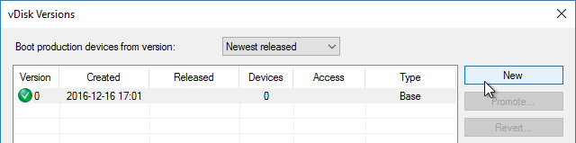
- Notice that the Access is set to Maintenance. Click Done.
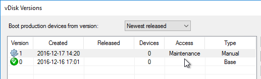
- If you look at the physical location where the vDisks are stored, you’ll see a new .avhdx file.
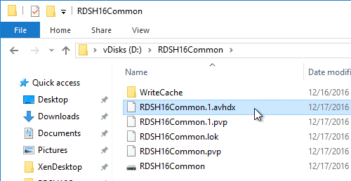
- Go to the properties of an Updater Target Device, and change the Type to Maintenance. You’ll use this Target Device to update the vDisk. Make sure this Target Device you are using for vDisk Updating is not in any Delivery Group so that users don’t accidentally connect to it when it is powered on.
- Of course this Target Device will need to be configured to use the vDisk you are updating.
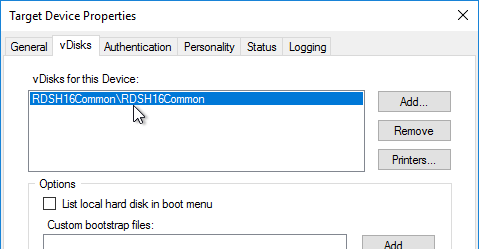
- Power on the Updater Target Device.
- If you did not configure the DWORD registry value HKLM\Software\Citrix\ProvisioningServices\StreamProcess\SkipBootMenu to 1 on the Provisioning Servers, then you’ll see a boot menu.
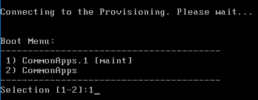
- Login to your Updater Target Device. The Virtual Disk Status icon by the clock should indicate that the vDisk Mode is now Read/Write.

- Make any desired changes.
- The Citrix Provisioning Image Optimization tool disables Windows Update. To install Windows Updates, use the following script to enable Windows Update, install updates, then disable Windows Update - http://www.xenappblog.com/2013/prepare-a-provisioning-services-vdisk-for-standard-mode/
- Before powering off the target device, run your sealing tasks. Run antivirus sealing tasks. See VDA > Antivirus for links to antivirus vendor articles.
- Citrix Blog Post Sealing Steps After Updating a vDisk contains a list of commands to seal an image for Citrix Provisioning.
- Base Image Script Framework (BIS-F) automates many sealing tasks. The script is configurable using Group Policy.


- Power off the target device so the vDisk is no longer being used.
- Go back to the Versions window for the vDisk.
- Highlight the version you just updated, and click Promote.
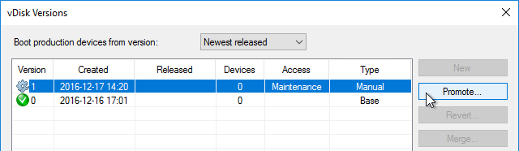
- Best practice is to promote it to Test first. Or you can go directly to Production if you’re confident that your updates won’t cause any problems. Note: if you select Immediate, it won’t take effect until the Target Devices are rebooted. For scheduled promotion, the Target Devices must be rebooted after the scheduled date and time.
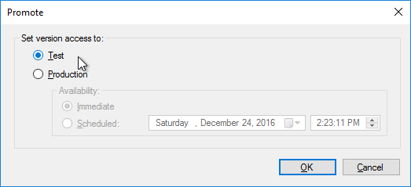
- The Replication icon should have a warning icon on it indicating that you need to copy the files to the other Provisioning server.
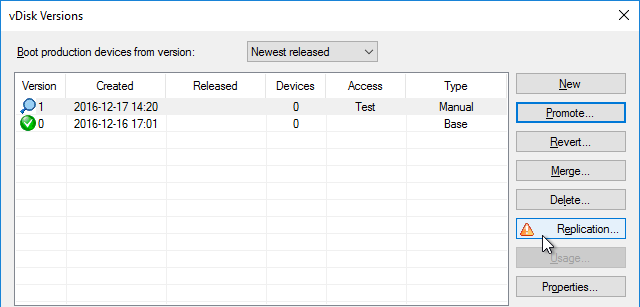
- Only copy the .avhdx and .pvp files. Do not copy the .lok file.
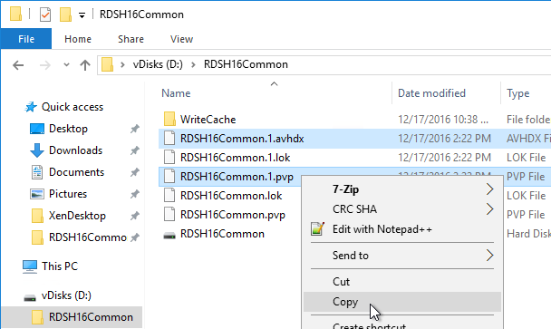
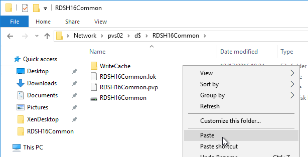
-
Another method of copying the vDisk files is by using Robocopy:
-
Citrix Blog Post The vDisk Replicator Utility is finally finished! has a GUI utility script that can replicate vDisks between Citrix Provisioning Sites and between Citrix Provisioning Farms.


- Then click the Refresh button, and the warning icon should go away.
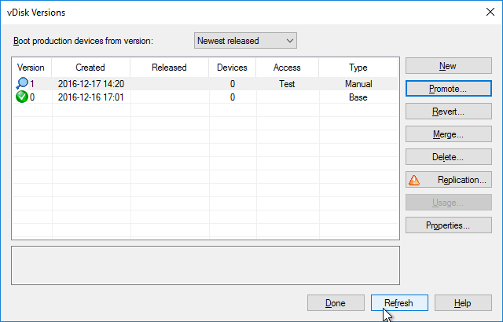
- Configure a Target Device to boot the Test vDisk Type. Then boot it.
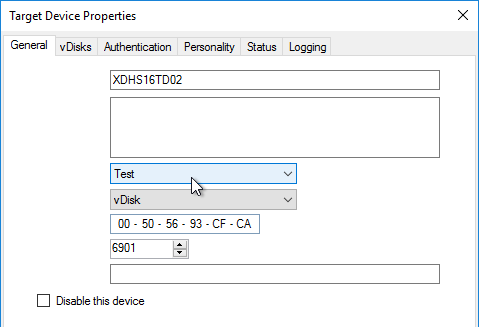
- Once testing is complete, promote the vDisk version again.
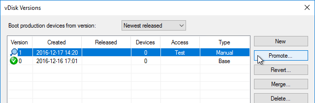
- Immediate means it will take effect only after Target Devices are rebooted, whether immediately or later. Scheduled means the Target Device has to be rebooted after the scheduled date and time before it takes effect; if the Target Device has been rebooted before the scheduled date, then the older version is still in effect. Click OK.
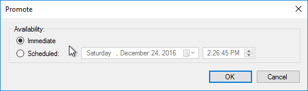
- If you need to Revert, you can use the Revert button, or the drop-down on top of the window.
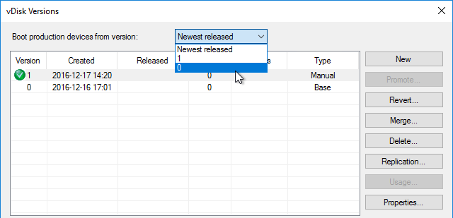
Merge Versions
- Citrix recommends no more than five .avhd files in the snapshot chain. To collapse the chain of .avhd files, you can Merge the versions. Don’t Merge until the files on both Provisioning servers are replicated.
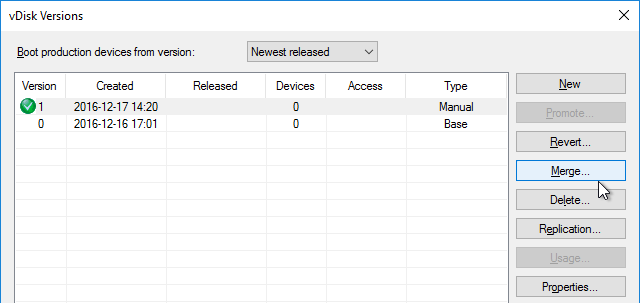
- You can merge (Merged Updates) multiple .avhdx files into a single new .avhdx file that is linked to the original base file. Or you can merge (Merged Base) the original base, plus all of the .avhdx files into a new base .vhdx file, without any linked .avhdx files.
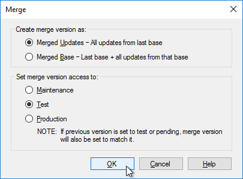
- The Merged Base process creates a whole new .vhdx file that is the same size or larger than the original base. After merging, replicate the merged file to both Provisioning Servers.
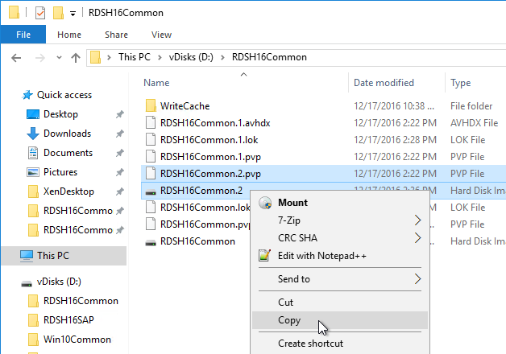
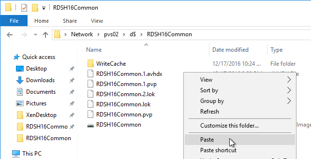
- Make sure there is no warning icon on the Replication button.
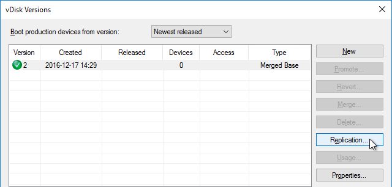
- If your merged version is currently in Test mode, then you can promote it to Production.
- After merging, you can delete older versions if you don’t need to revert to them.
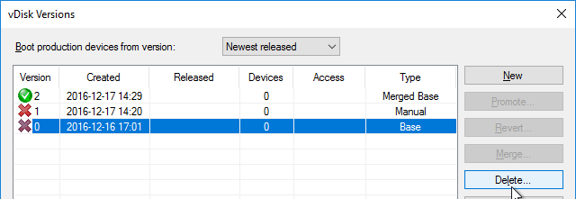
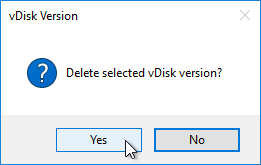
Citrix CTX207112 Managing Provisioning Services VDisk Versions with VhdUtil Tool: CLI tool that can do the following outside of Citrix Provisioning Console:
- dump header/footer
- merge chain
- rename chain
Expand vDisk VHD
To expand a vDisk file, create a Merged Base. Then use normal VHD expansion tools/methods.
One method is described below: (Commands in fixed width font)
- Open cmd or powershell as administrator
diskpartselect vdisk file="" (e.g. V:\store\my.vhd) list vdisk(you should now see your vdisk and the path)expand vdisk maximum=60000(This is the size in megabytes of the size you want to extend, so 60000 is 60Gb)attach vdisklist disklist volume(take note of the Volume number of the your vdisk, you should see the old size)select volume 5(or whatever volume number from list volume command)extendlist volume(you should now see the size you want for your disk. This should also be seen in the Citrix Provisioning console)detach vdiskexit
Reverse Image - BCDEDIT Method
If you want to upgrade the Citrix Provisioning Target Device Software on a vDisk, and if your current Target Devices Software installation is 7.6 Update 1 or newer then you can simply install the new Target Device Software. No special steps required. However, if your Target Device software is 7.6 or older then you'll need to Reverse Image as detailed in this section.
If you want to update the NIC driver (e.g., VMware Tools), then you can't use the normal vDisk versioning process since NIC interruptions will break the connection between Target Device and vDisk. Instead, you must reverse image, which essentially disconnects the vDisk from Citrix Provisioning.
One method of reverse imaging is to boot directly from the vDisk VHD. All you need to do is copy the vDisk VHD/VHDX to a Windows machine's local C: drive, run bcdedit to configure booting to the VHD/VHDX, reboot into the VHD/VHDX, make your changes, reboot back into the original Windows OS, copy the VHD/VHDX back to Citrix Provisioning and import it. Details can be found later in this section.
Instead of the BCDEDIT method, you can try one of these alternative reverse image methods:
- Citrix Image Portability Service can take a VHD from a Citrix Provisioning (PVS) store and recreate the original vSphere image.
- Aaron Silber How to update VMware Tools without Reverse Imaging - The gist is to add an E1000 NIC, boot from that, upgrade VMware Tools, and then remove the E1000 NIC. CTA Nishith Gupta has detailed this process in VMware Tools In PVS Image.
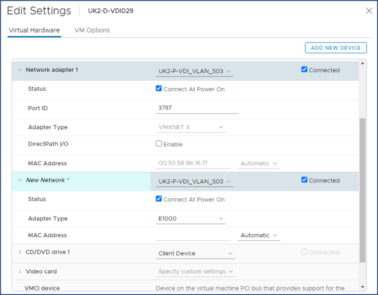
- The traditional method of reverse imaging is to use Citrix Provisioning Imaging (P2PVS.exe), or similar, to copy a vDisk to a local disk, boot from the local disk, make changes, and then run the Imaging Wizard again to copy the local disk back to a new vDisk. Select Volume to Volume. On the next page, select C: as source, and local disk as Destination. If you don't see the C: drive as an option, then make sure your vDisk is in read/write mode (Private Image or Maintenance Version).
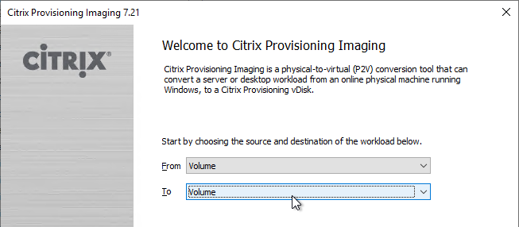
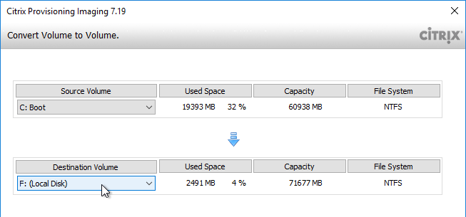
- George Spiers PVS Reverse Image with VMware vCenter Converter. This article has troubleshooting steps if the reverse image won't boot.
- Jan Hendriks Citrix PVS Reverse Imaging with Windows Backup.
To use bcdedit to boot from directly from vDisk VHD (Microsoft TechNet Add a Native-Boot Virtual Hard Disk to the Boot Menu):
- In Citrix Provisioning Console, if using versioning, create a merged base.
- Copy the merged based vDisk (VHDX file) to any supported Windows machine. Note: the C: drive of the virtual machine must be large enough to contain a fully expanded VHDX file.
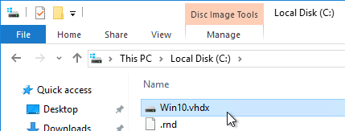
-
Run the following command to export the current BCD configuration:
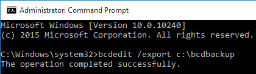
-
Run the following command to copy the default BCD entry to a new entry. This outputs a GUID that you will need later.
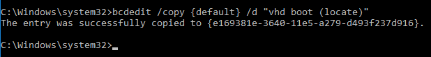
-
Run the following commands to set the new BCD entry to boot from the VHD file. Replace {guid} with the GUID outputted from the previous command. Include the braces.
bcdedit /set {guid} device vhd=[locate]\MyvDisk.vhd bcdedit /set {guid} osdevice vhd=[locate]\MyvDisk.vhd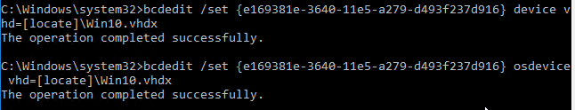
-
Make sure you are connected to the console of the virtual machine.
- Restart the virtual machine.
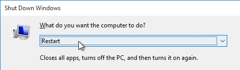
- When the boot menu appears, select the VHD option. Note: if you see a blue screen, then you might have to enlarge your C: drive so the VHD file can be unpacked.
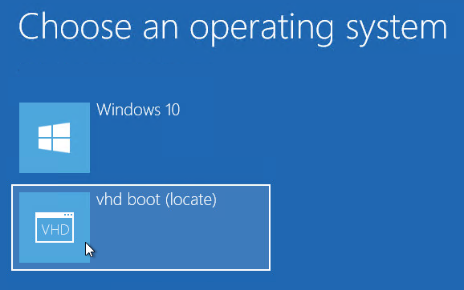
- Login to the virtual machine.
-
Perform updates:
- Uninstall the Citrix Provisioning Target Device software.
- Upgrade VMware Tools.
- Reinstall Citrix Provisioning Target Device software. The Target Device software must be installed after VMware Tools is updated.
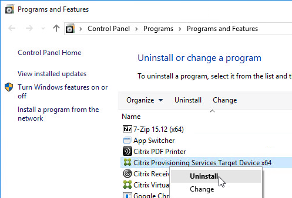
- When you are done making changes, reboot back into the regular operating system.
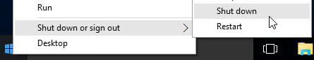
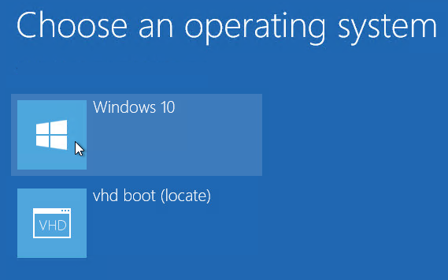
- Rename the updated VHD file to make it unique.
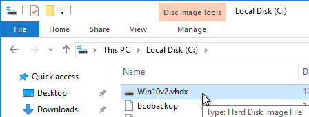
- Copy the updated VHD file to your Citrix Provisioning Store.
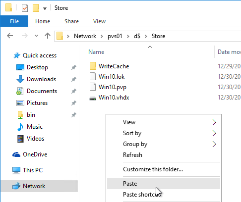
- Copy an existing .pvp file and paste it with the same name as your newly updated VHD.
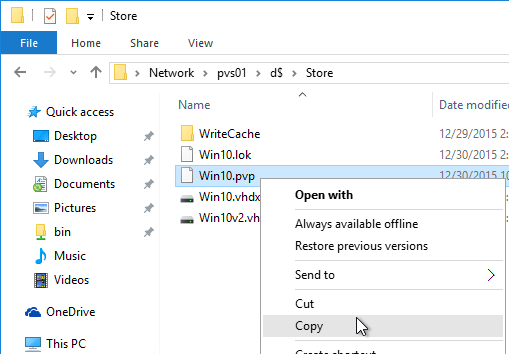
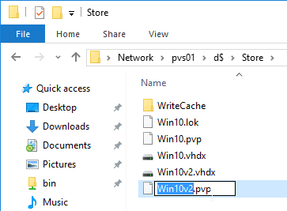
- In the Citrix Provisioning Console, right-click the store, and click Add *or Import Existing vDisk.
*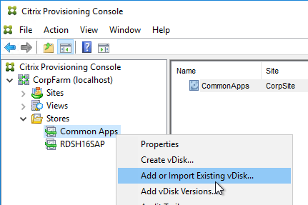
- Click Search.
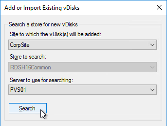
- It should find the new vDisk. Click Add. Click OK.
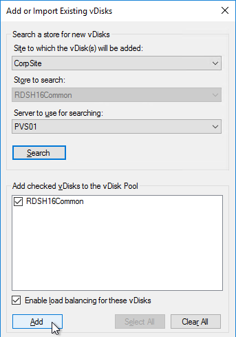
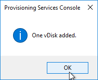
- You can now assign the newly updated vDisk to your Target Devices.
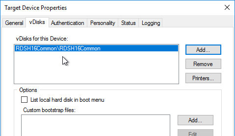
Automatic Scheduled vDisk Update – SCCM
You can use the vDisk Update Management node (and Hosts node) in Citrix Provisioning Console to schedule an updater machine to power on, receive updates from System Center Configuration Manager, and power off. The new vDisk version can then be automatically promoted to Production, or you can leave it in Maintenance or Test mode and promote it manually.
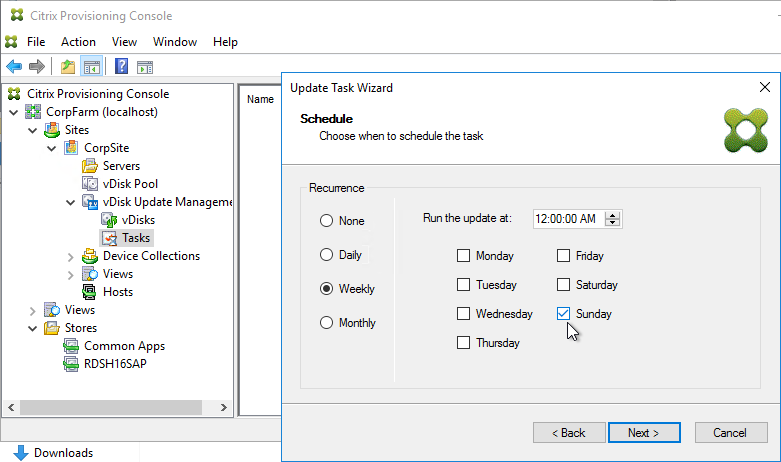
See the following Citrix links for instructions:
- CTX205394 How to Configure PVS vDisk Update Management Using SCCM
- CTX137757 How to Create a Designated Update Virtual Machine and Add a Host Connection to Hosts Node
- CTX140209 How to Add a Managed vDisk to the vDisks Node Under vDisk Update Management
- CTX140210 How to Create an Update Task to be Performed at a Scheduled Time in Provisioning Services